Local-first, native macOS, and yours in one keystroke. Ghost drops
from your notch or floats above your dock, routes
prompts to local and hosted models, searches your private files,
and runs verified Mac actions.
Ghost is a native SwiftUI app for macOS that connects
local models, hosted APIs, optional agent CLIs, document
retrieval, timers, and verified Mac actions through one quiet
surface, placed as a top-center notch or a floating bar.
It runs as an accessory, with no Dock icon and no
full-screen takeover. It appears with a keystroke, does the work, and steps
back. Your Mac stays your Mac.
Every capability starts off. You opt into each one (web, files,
automation, messaging, screen, shell) in a
three-step first run. Nothing is on by default. Nothing runs in
the background without you asking.
Watch it work
One sentence. A real file on your Desktop.
Ghost is asked for an interactive Milky Way. It writes
milky-way.html, saves it to the Desktop, and opens it
in Safari. The finished file is yours to keep, edit and send on.
Recorded on macOS, 26 seconds, no cuts.
NEWWhat's new
The latest update.
Take a screenshot, press ⌘V in Ghost and ask about it, on whatever
model you are using including your Claude subscription. And reading text
off your screen, which could take the better part of a minute the first
time, now answers in about a tenth of a second.
Version 3.0.0 · shipping now
Images
⌘V a screenshot into the chat bar
Take a screenshot, press ⌘V in Ghost, ask your question. The
image rides along with the message and Ghost answers about what is in
it, in the notch and in the floating bar alike. Pasting an image used
to do nothing at all, silently, while pasting text worked perfectly.
A Claude or ChatGPT subscription used to be told to go and find an API
key and a vision model; that advice was wrong, and the model at the
other end of your subscription reads the picture now.
Screen reading
A tenth of a second, not a minute
The first screen read after a macOS update could take the better part
of a minute, even for two words, and every one after it was instant.
That was macOS loading its text recognizer rather than Ghost thinking.
Ghost now wakes it quietly at launch, so nobody waits for it. Asking
flatly to read your screen runs that same instant capture instead of
a model round trip, while a question that needs an answer as well as
the words still goes where it belongs.
Before that
Sixteen releases, newest first. Open one to read what changed.
Two things made Ghost overstay. Opening it with the shortcut quietly made
it permanent, so the only way to close it was the shortcut again, and
on a monitor with no notch the collapsed surface had no shape to sit
in, so it either showed nothing at all or a black tab stranded in the
middle of the menu bar. Ghost now leaves a second after your pointer
does, unless leaving would cost you something, and it draws itself a
notch wherever it lands.
A timer running in Ghost was invisible unless you opened the Timer section,
and so was everything else: a question you asked and walked away from,
and any news Ghost had for you afterwards. The collapsed notch now
says all three out loud, shaped to the cutout on your Mac. It also
stops carrying yesterday's focus sessions into today.
Asking about your own documents used to mean attaching them again on every
question, and forgetting to was worse than useless. You can now state
the rule once, in your own words, and Ghost keeps it: a matching
question finds that document, reads the part that answers it and
brings it into the reply. Spreadsheets can be changed as well as read,
one cell at a time, without the workbook losing anything you set up.
Ghost has always asked before it does anything risky, and an
approval prompt can only ever answer one question at a time. It
cannot hold a standing rule. So there was no way to say never
touch that folder, or never message anybody, and no way
afterwards to find out what Ghost had actually attempted: a
refusal left no trace, and a read that worked left none either.
Boundaries are those standing rules, checked before anything else
runs, and the action log is the record. Both live on your Mac.
Ghost has had a knowledge base since 2.0, and on most Macs it was
empty. Saving a fact needed a tool, and a plain sentence like
remember that I am in the Tuesday section is answered on the fast
route that carries no tools, so the one moment you told Ghost
something worth keeping was the one moment it had no way to write
it down. Asking what do you know about me then got the only
honest answer available: nothing. Both halves are fixed, and the
fact is saved on your Mac by Ghost itself rather than by a model
deciding to.
Sums, conversions, the clock, dates and text tools are
computation. There is nothing for a model to
add to any of them, and waiting a few seconds and paying for
the privilege was the wrong answer to 2+558. All of it now
happens on your Mac, before any provider is contacted, with
no API key and no permission needed. Contact lookups got the
opposite fix: they used to reach a model that has no way to
read Contacts, so it would invent a phone number and present it
as fact.
Open Safari has always happened the moment you asked, on
your Mac, with no model involved. Close Safari went the other
way entirely: it became a model turn, then a high-risk tool
that stopped to ask for approval, and on a bad day an answer
claiming it had closed something it never touched. Both
halves are the same mechanical thing now, and neither needs
a model or an API key.
Settings has a row promising what Ghost can do, with examples
to try. Opening it gave you four lines about installing an
optional external runtime that almost nobody turns on. It now
answers the question someone opening that row is actually
asking, and the help text around it stopped naming three
features that no longer exist: a command palette on
⌘K that was never built, and screens inside a window
Ghost stopped opening.
Ghost draws its privacy line by origin: anything out of
Messages, Notes, Mail or Contacts is private and never goes
to a cloud model. That rule is exact about where text came
from and blind to what is in it. A card number pasted into a
plain text file is, as far as the rule is concerned,
ordinary text from an ordinary app. Ghost now reads the
selection itself first and says what it found before you
press anything. The same release adds a Diagnostics page for
the opposite problem: the actions that quietly did not work,
and had nowhere to say so.
Two things you could not see. The model picker gained a
second column for the model, and the window it lives in was
still the width of the old single column, so the picker
looked like it had been cut in half. Separately, asking
Ghost to write code put the answer in the chat window, where
a long diff is the wrong shape. Coding requests now open the
Terminal and stay there, with the full diff, the file cards,
and a line telling you what is happening while it happens.
Two things a user reported, both broken since before anyone
said so. A Ghost app launched from the Finder does not
inherit the PATH your Terminal has, and Codex installed
through npm is a small script that goes looking for Node on
exactly that PATH. Separately, every image Ghost looked up on
the web was being checked with a request the check itself
could not read, so real pictures were judged unreachable and
removed from the answer before you saw it.
A Ghost user pointed out that the "Try: …" line above the
composer was suggesting phrases that did nothing, and the
reason it stayed hidden is that a Ghost action which failed
produced no card at all. So an action blocked on a missing
permission looked identical to one that quietly did nothing.
Every suggested phrase is now checked against the code that
has to answer it, failures say so on screen, and there is a
page in Settings listing everything you can say.
Choosing Low, Medium, High or Max on the Codex route only
ever added a sentence of advice to the prompt. The real
model and reasoning effort came from whatever your own
~/.codex/config.toml said, so a setting made
inside Ghost changed nothing about how Codex actually ran.
Ghost now chooses the model and the effort for each run,
keeps that choice to itself, and tells you what Codex
reported using.
A Ghost user wrote in to say the Codex route was simply
dead: choosing "your ChatGPT plan" produced nothing, with no
error to explain it. They were right, and it had been broken
for everyone who had not first pointed Ghost at a code
repository. So is the larger problem behind it, which was
that Ghost never checked whether your subscription was
signed in before asking it to answer.
This release came out of using Ghost for a day and writing
down everything that went wrong. It was taking ⌘/ away
from every app on your Mac, telling you about keyboard
shortcuts it had never implemented, hiding its own update
window behind itself, and freezing for a quarter of a second
every time you pressed Return. It has a menu bar icon again,
so you can tell it is running.
Ghost had no first run at all: a new install opened an empty
text field and left you to guess. It now walks you through
where answers come from, offers you a first question, and
stops taking your keyboard at every launch. Typing a slash
lists everything it can do. Conversations can be searched
and named. This release also closes a security hole in web
fetching, and finishes the undo journal.
Every release ships its own notes inside the app. Ghost shows
them once, on the first launch after it updates.
01Summon
Call it from anywhere.
No Dock icon, no window to manage. Ghost answers to global
shortcuts that work across every app on your Mac, and you decide
whether it drops from the top-center notch or floats like Siri
near the bottom of the screen. No Accessibility permission
required: the hotkeys are registered through Carbon, the same
system Spotlight uses.
⌥Space
Global shortcut
Press Option+Space from anywhere to open Ghost. The
same surface, wherever you are. Configurable to
⌘⇧Space, ⌃Space, ⌃⌥Space,
or ⌘⌥G.
Notch or floating bar
One surface, two homes. A toggle in Settings drops Ghost down
from the top-center notch, or floats it as a Siri-style
bar about an inch up from the bottom of your screen,
growing upward as it fills.
Hover to reveal
In notch placement, glide your pointer to the top center of the
screen and Ghost reveals itself. No click, no shortcut. The
floating bar stays inert until you summon it, so it never traps
a stray hover.
⌥⇧Space
Alternate shortcut
Enable a second global shortcut,
⌥⇧Space by default, that opens the very same surface. A muscle-memory
backup for when your hands are already on the keys.
Deep link
ghost://toggle opens Ghost from any app or script.
No file paths or user content accepted. The link only ever
opens, never exfiltrates.
macOS Services
Right-click any text in any app → Services → Ghost for
Rewrite Professionally, Rewrite Casually,
Humanize, Check Grammar, or
Ask Ghost for Feedback.
02Route
One prompt. Two engines. Eight providers.
You ask naturally. Ghost scores the prompt, picks the provider,
model, and engine, and decides whether a fast direct call is
enough or whether the work needs a connected agent loop.
i
Direct API
The default path. Ghost calls the provider's HTTP API directly
with its native tool harness: streaming, tool loops, prompt
caching on Claude, retry with backoff on transient failures.
or
ii
Ghost Agent
For deeper work, Ghost shells out to a local CLI at
~/.local/bin/ghost or hermes, passing
provider, model, turn limits, approval mode, and toolsets.
Local
LM Studio
localhost:1234
Local
Ollama
localhost:11434
Cloud
Claude
Anthropic
Cloud
Gemini
Google
Cloud
DeepSeek v4
reasoning
Cloud
OpenCode Go
zen/go/v1
Cloud
OpenCode Zen
free tier models
Custom
OpenAI-compatible
OpenAI · vLLM · any /v1
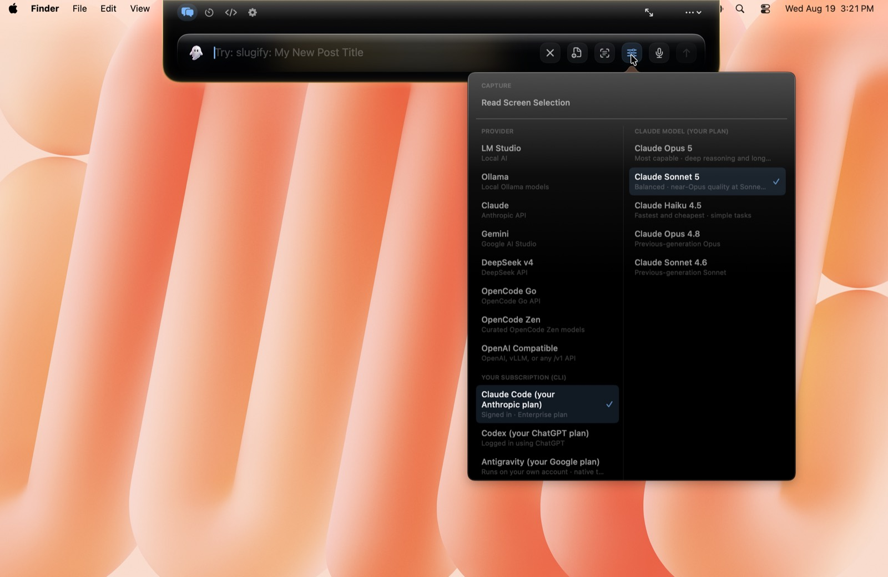
Effort modes
Quick4 turns · 4K
Balanced12 turns · 8K
Deep40 turns · 16K
Max90 turns · 32K
Four effort levels cap how many turns a run may take, from a
one-shot answer to a ninety-turn deep-work session. Token budgets
and mode names scale by provider; the figures above are Claude's
ceilings, and local models run leaner.
Approval modes
Ask
Read-only tools auto-run; medium and high risk ask first.
Safe
Low and medium auto-run; high risk still asks.
Auto-run
Everything classified runs, but file path scope never
expands.
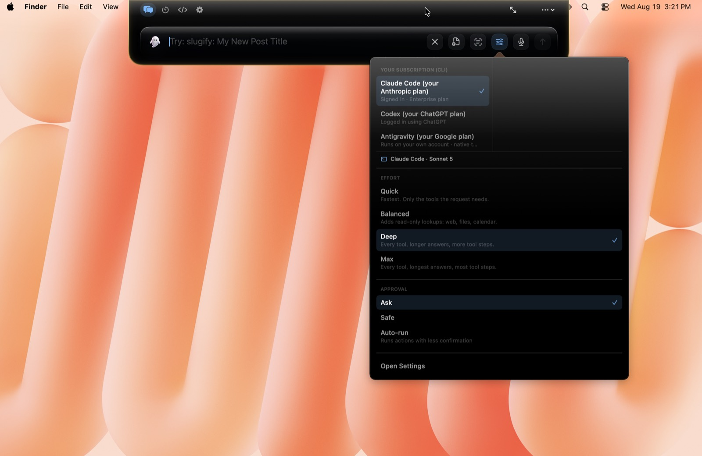
03Remember
Your files, searchable memory.
Ghost indexes the folders you approve into a local SQLite database
with FTS5 full-text search. When a prompt needs context, it
retrieves source-backed chunks with citations you can open.
The index
Local SQLite · FTS5 · WAL mode
Chunks live in
~/Library/Application
Support/Ghost/rag/ghost_rag.sqlite. Max chunk 3,500 chars, 500-char overlap, sentence-aware
splitting, page numbers preserved from PDFs, section titles from
markdown headings.
Watch a folder recursively. Startup sync, event-driven sync with
8-second debounce, periodic rescan every hour. Up to 20,000
files per pass. Manual folder ingest scales to 50,000. Skips
node_modules, build,
__pycache__, venv, and the rest.
Cited answers
Open the source behind every claim
RAG queries return chunk metadata and source paths. Ghost can
open the cited file at the right spot, or reveal it in Finder.
Ten RAG tools: ingest, sync, query, search, open, status,
remove, reindex, clear.
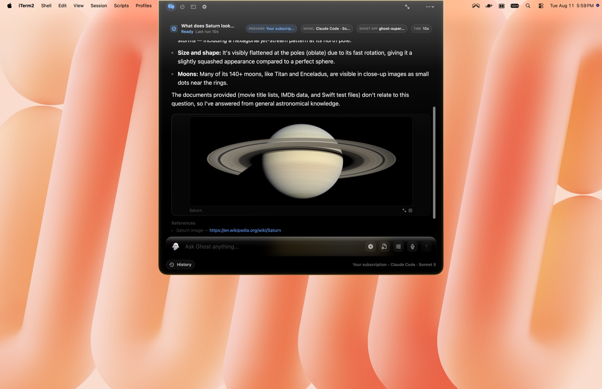
Semantic recall
Paraphrase and still match
Beyond literal keyword matching, Ghost uses on-device word
embeddings, Apple's NaturalLanguage, so a
paraphrased request still matches your saved facts and fast local
commands. All on-device.
04Act
Models request. Ghost verifies.
The capability harness is Ghost's action layer. The model never
touches the filesystem directly. It asks, Ghost normalizes the
path, checks permissions, runs app-owned code, and returns a
machine-readable receipt. You see what actually happened.
76built-in capabilities
18file operations
9document formats
4risk tiers
Files
Read, write, move, convert
List, glob, grep, read, write, create, edit, patch, move, copy,
delete (trash by default), zip, reveal in Finder. Conversions
between PDF, DOCX, HTML, TXT, and Markdown. Desktop, Downloads,
Documents, Ghost Outputs, and the workspace are all safe output
targets.
A gated call shows you the tool name, its risk tier, and the
exact arguments before anything runs. Where a path is involved
you can also grant it for that folder for the rest of the
session, so one answer covers the whole run.
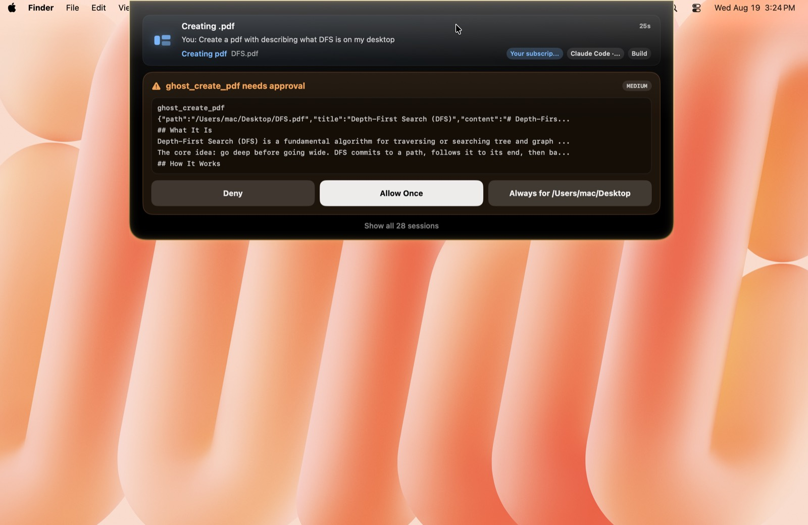
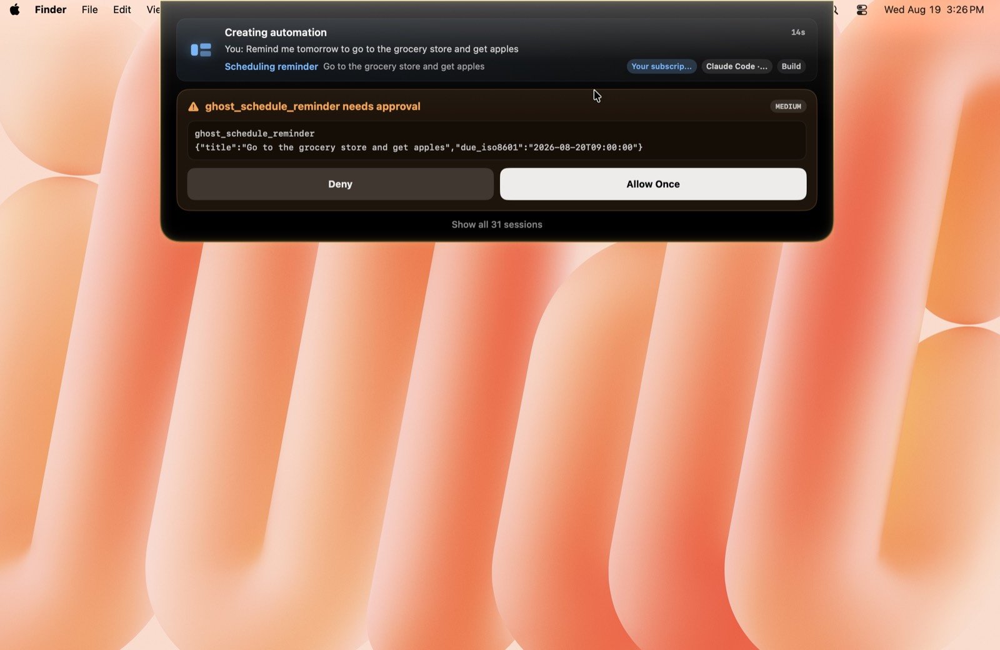
Documents
Generate real artifacts
Create Markdown, HTML, TXT, CSV, JSON, PDF, DOCX, PPTX, and XLSX,
all through native macOS frameworks. If a local model answers
with a usable code block where it should have called a file tool,
Ghost saves the artifact itself and returns the real path.
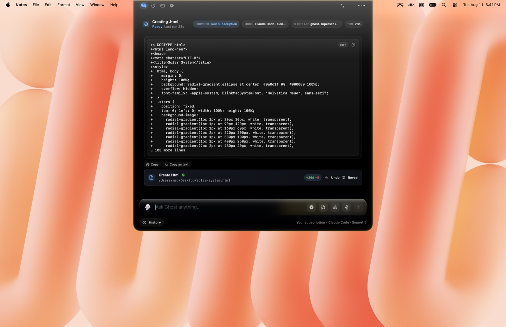
Risk classification
Four tiers, fail closed
Low
Read-only: search, list, read, grep, weather, web search.
Medium
Writes, creates, calendar, reminders, file copy, app launch.
Unknown future tools fail closed, never silently run.
Undo
Action journal
Every write, edit, move, and delete records before-and-after
state. Up to 100 journal entries. If a run goes sideways, you
can roll it back.
Mac utilities
One-word control of your Mac
Run a system report: CPU, RAM, disk, battery, even SMC
temperatures. Set display brightness and audio device or volume,
snap windows into layouts, run Homebrew, uninstall apps and clean
junk, compress video and images or make a GIF, run a network
speed test, keep the Mac awake, and pick a screen color.
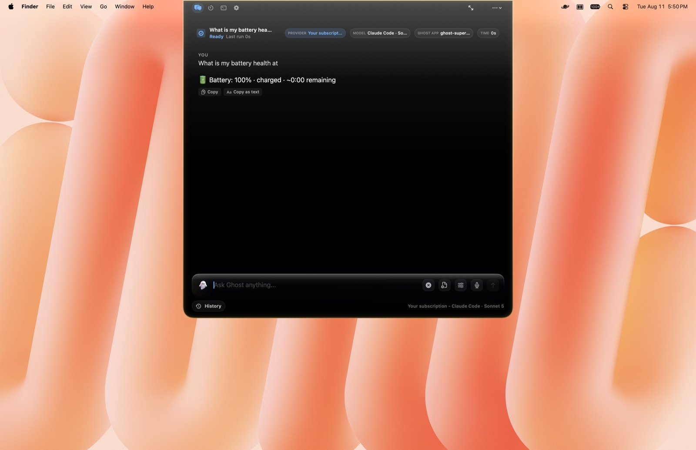
05Native
It speaks macOS fluently.
Ghost doesn't shell out to scripts when it doesn't have to. It
talks to Calendar, Reminders, Notes, Shortcuts, Vision OCR, and
Speech Recognition through the same native APIs your other apps
do.
Calendar
Query events in a date range and create new ones after
explicit intent. A deterministic parser turns natural language
into real calendar entries.
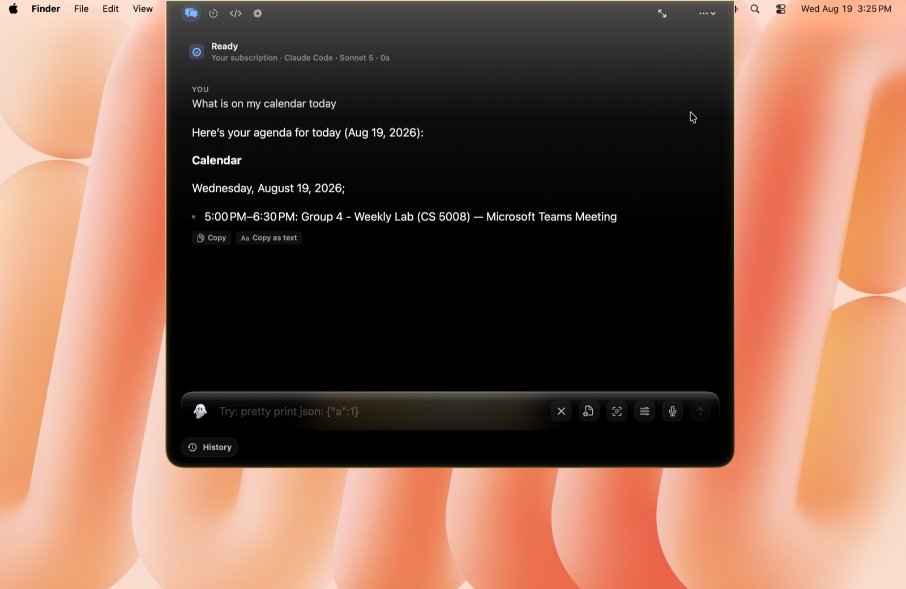
Reminders
Turn "remind me to check the oven in 10 minutes" into a real
macOS Reminder with a due date, parsed deterministically from
your sentence.
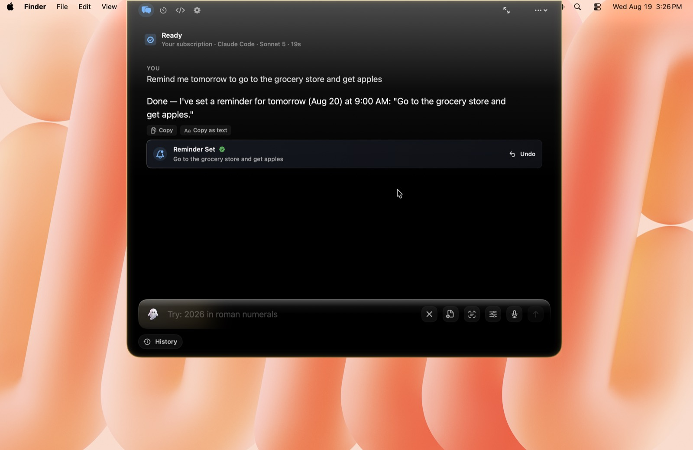
Apple Notes
Create notes in specified folders, append to existing ones,
and search by title and content, all through AppleScript.
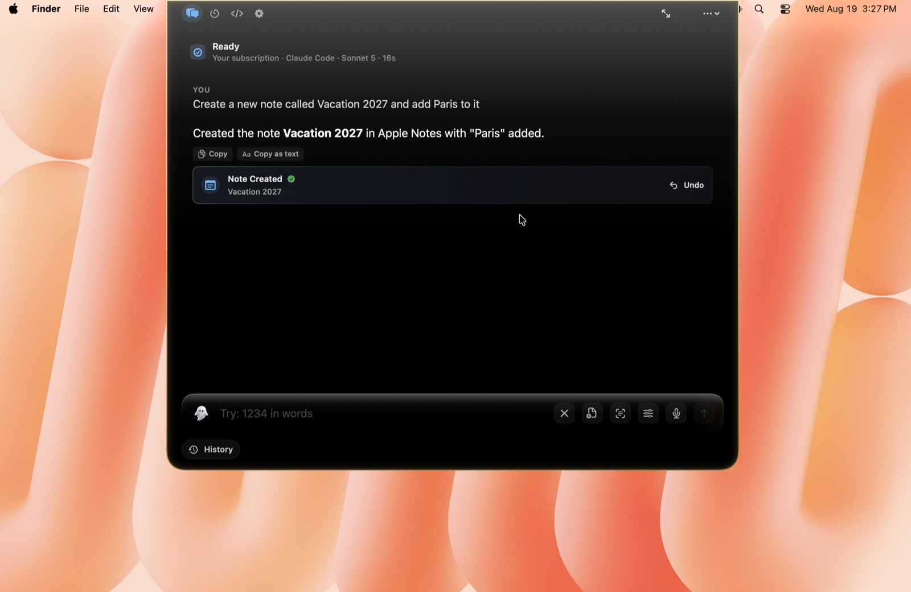
Messages & FaceTime
Ask Ghost to read recent iMessages, send an iMessage, or start
a FaceTime call. It resolves a name like "Mom" to the
right contact and asks before sending. Off by default. Enable
Messages & FaceTime in Privacy & Access.
Everything is read on-device and never sent to a cloud model.
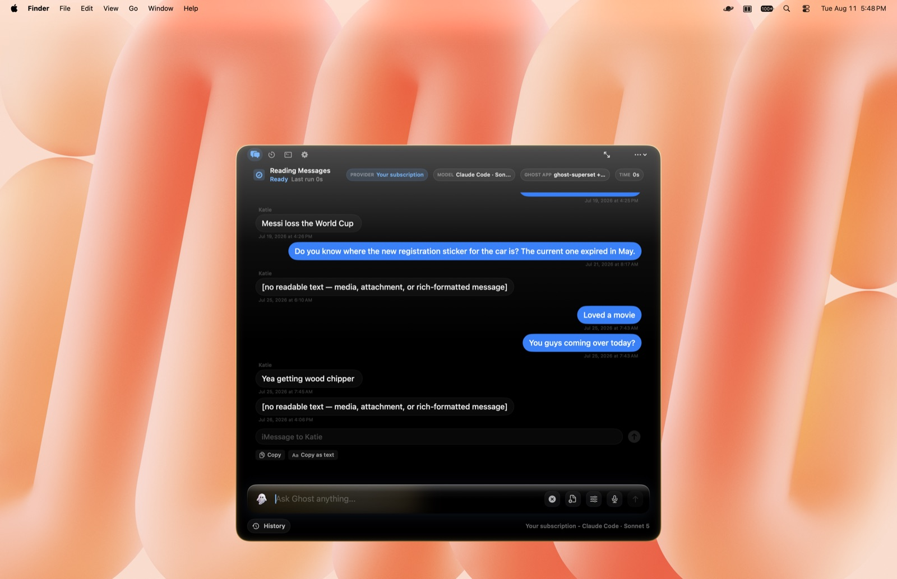
Voice input
On-device SFSpeechRecognizer with a live
three-bar EQ waveform driven by RMS from the audio tap. Start,
stop, send, or press Space to toggle.
Screen capture & OCR
Capture a region and extract text with Apple Vision OCR in fast
or accurate mode. Ghost hides during capture and restores
afterward.
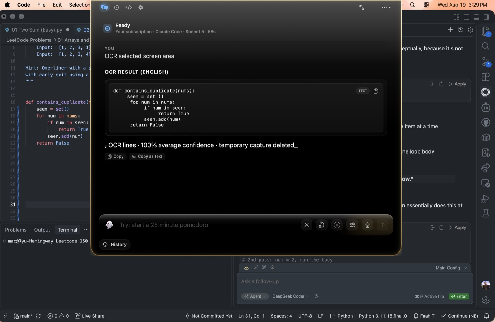
Shortcuts & timers
Run macOS Shortcuts through /usr/bin/shortcuts.
Set pomodoro and countdown timers in natural language. Active
timers take over the compact notch, and completed timers
reopen with pause, resume, add-time, restart, and dismiss
controls.
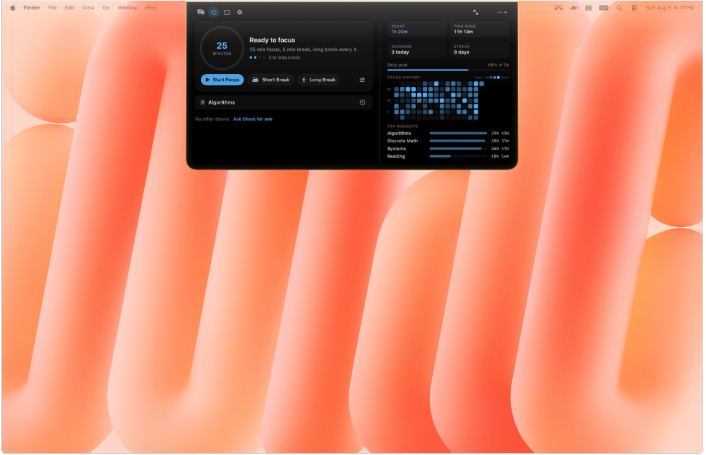
06Build
A workspace for deeper work.
When a compact notch isn't enough, Ghost opens into deeper work
modes: agent workflows, an in-app terminal, and an intent router
that classifies prompts before they run.
Ghost Code
Four agent modes
Plan
Inspect & propose
Build
Edit files & run commands
Explore
Read & map codebase
Review
Inspect diffs & catch bugs
Live progress in the notch, including creating-file and
using-tools states.
Terminal
A terminal that also codes
Press ⌘3 inside Ghost. Run shell commands, or hand a
coding turn to your model and watch the coloured diff arrive as a
card with its own Undo. Slash commands like /new,
/model and /help run before anything
else, so they work with no provider connected.
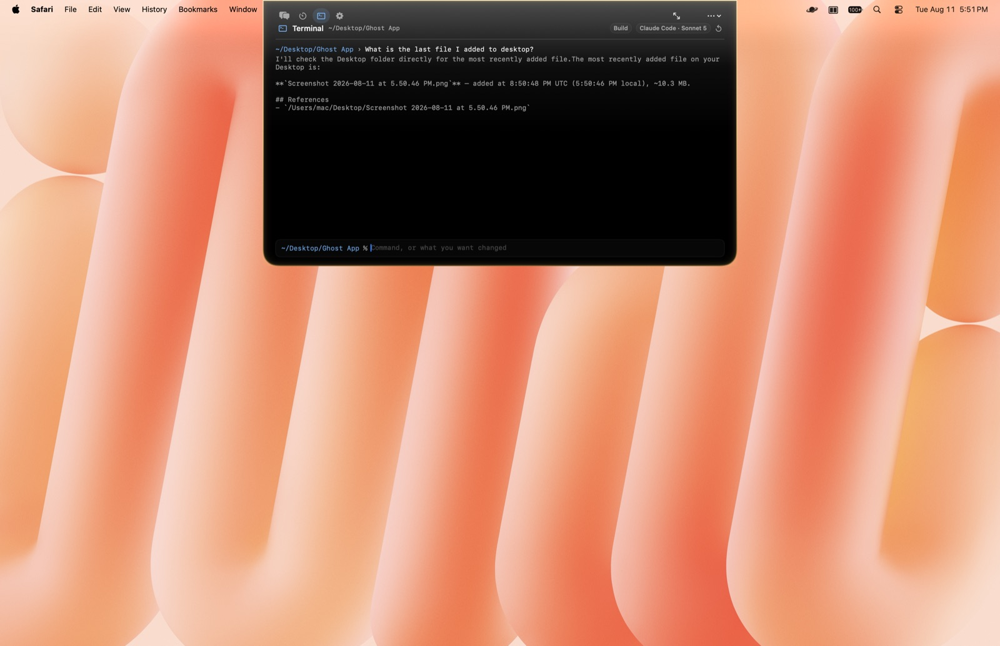
Intent Router
14 intent kinds
Classifies prompts into Answer, Research, Files, Summarize,
Screenshot/OCR, Clipboard, Create, Organize, Automation,
Messaging, Code, Debug, Review, Terminal, then detects
filenames, save targets, and RAG references before routing.
Local & private models
Run fully on-device
Ghost talks to LM Studio and Ollama running on your Mac, and your
Messages, Mail, Notes, and Contacts are only ever read with one
of these local models. A cloud model is refused.
07Protect
Compatible with small local models like Gemma 4 e4b.
Privacy is the architecture here, settled before anything runs. Ghost
separates local providers, local indexes, and hosted key paths, so
where your data goes follows from the route you pick.
Secrets
Keychain first
API keys live in macOS Keychain. A legacy
~/.ghost/.env file is migrated transparently and
deleted. Keys are only read when their provider is actually
called, with no Keychain prompts at launch.
Provider isolation
Only the right keys are visible
Environment scrubbing ensures the agent process only sees the
selected provider's keys. DeepSeek keys are blocked when any
other provider is selected. Local providers can't launch agent
mode at all.
Web egress guard
No private networks, ever
Web fetches block localhost, private IPv4/IPv6, link-local,
multicast, and reserved addresses. DNS resolution checks every
address. Redirects to private destinations are blocked.
Cookie-free, cache-free, 5MB max.
Sensitive access gate
Credentials ask twice
Even with Full Disk Access, paths like .ssh,
.gnupg, .aws,
login.keychain, .kube/config, and
.env require explicit consent: Allow Once, Always
This Session, or Deny.
Tool access policy
Six independent switches
Web, local files, Mac automation, Messages and FaceTime, screen
capture, and terminal inspection are each toggled
independently. Disabled capabilities
are removed from model tool schemas and checked again
before execution. Revoking cancels active work mid-flight.
Deep link security
Only ghost://toggle
The only deep link Ghost accepts is one that opens Ghost. No
file paths, no user content, no exfiltration vectors. Older deep
link patterns are blocked.
08Feel
Cosmic glass, one accent.
Ghost's interface is built on a "Cosmic Glass" design system:
NSVisualEffectView blur with a subtle noise layer,
and a single azure accent that every token resolves to, so the
hue is retuned in one place.
Accentazure
Surfacecosmic glass
Sheengold
Edgegilded ring
Signature animations
The surface condenses into view with scale, blur, and a soft
bloom, plus a trackpad haptic. A gentle haptic marks answer
completion. A single welcome-back bloom swells from the logo
the first time you open Ghost each day.
Liquid glass & iridescence
Ghost's pill is rendered in a "liquid glass" material that
samples the desktop behind it, with a slow iridescent streak
that drifts near the caret while you type: deep amber, gold,
pale champagne, and rose-gold across the composer.
State-reactive send button
Hollow when the composer is empty, primary accent when ready,
red stop button while a run is in flight. Answer blocks ease in
from a soft blur.
Premium HUD
Tabular numerals, a latency sparkline, a token counter with
rolling number animation, and skeleton loaders while content
arrives.
Usage & cost
Open with ⌘⇧U. Today, 7-day, and 30-day spend, a
30-day sparkline, per-model breakdown, and a recent activity log,
with cost approximated from a per-model rate table.
Section bar
Chat, Timer, Terminal and Settings sit on one bar inside the
surface, and ⌘1 through ⌘4 jump
between them. Every shortcut on the sheet is dispatched from
the same list the sheet renders, so a row can only exist if
something handles it.
Flexible surfaces
Whether it lives in the notch or the floating bar, the compact
surface stays small for quick asks, expands for transcripts and
settings, and hands deeper work to larger app surfaces when a
task needs more room.
Accessibility
All motion respects prefers-reduced-motion.
VoiceOver support through native menus that back every custom
control, and full keyboard navigation. Reduce Motion is honored
throughout.
FAQ
Frequently asked questions
finale
Bring your models, your files, and your Mac together.
Ghost is native macOS, notarized by Apple, and runs as a quiet
accessory you summon with a keystroke, as a notch or a floating
bar.